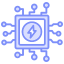

J.A.R.V.I.S. — программа для Mac, которая понимает голосовые команды и помогает с повседневными задачами. Она открывает приложения, ставит напоминания, ищет информацию, читает текст с экрана и отвечает живым голосом. Написан на Swift, работает на macOS 13 и новее.
Ассистент слушает микрофон, распознаёт русскую речь и выполняет команды. Ответы озвучиваются голосом (через Fish Audio), а на экране показывается интерфейс в стиле HUD
Работает локально: основные функции не требуют интернета. Для сложных задач можно подключить локальную модель Ollama или облачную — по выбору.
Никаких подписок. Только наш код.
Распознавание русской речи онлайн и офлайн и 450+ команд: запуск приложений, планы на день, поиск.
170+ MP3-реплики; TTS Fish Audio — только для ответов ИИ.
Ollama локально, OpenRouter в облаке. JarvisMemory и агенты — для сложных задач.
JarvisVision: OCR читает текст с экрана через Vision и Metal — быстро и без нагрузки на CPU.
SQLite-логи, топ приложений и оценка усталости каждые 5 минут.
Правила безопасности, контроль подозрительной активности и пароли в Keychain.
Уровни, опыт и достижения за реальную активность. Работа как игра.
Приложения, окна, звук, яркость и скриншоты — голосом
Погода, курсы, новости, крипта, Википедия и многое другое — по команде.

Модули 07Прямой доступ к системным API macOS — без прослоек.
170 + реплик; TTS — только для ответов ИИ.
Ollama на Mac; OpenRouter — по запросу.
Быстрые запросы к логам и настоящая аналитика.
Четыре инженерных барьера, которые пришлось обойти, чтобы ассистент работал как часть системы.
Микрофон замолкает, пока ассистент говорит, и ещё на 1,5 секунды после. J.A.R.V.I.S. не слышит сам себя.
MIC OFF → 1.5 sApple обрывает распознавание. Перезапуск каждые 50 секунд проходит незаметно для разговора.
RESTART / 50 sВ активном окне — 30 кадров, в фоне — 6. Невидимый HUD не ест батарею MacBook.
Performance GovernorТекст с экрана читает GPU MacBook через Metal. Vision обрабатывает кадр за доли секунды.
GPU / OCRЧетыре направления, которые сделают J.A.R.V.I.S. умнее, безопаснее и ближе к человеку.
Модель 3B вместо 0.5B: больше понимания, всё ещё локально.
Встроенный антивирус и проверка файлов на лету
Расширить голосовой словарь и живые интонации.
Управление Mac с iPhone.
SAIFER STUDIO: от первой строки кода в одиночку — до стабильной версии 3.1 и этого сайта.
Ядро, архитектура и первые голосовые команды. Главный инженер писал систему сам, от распознавания речи до управления macOS.
К проекту присоединились дизайнер, инженер и веб-разработчик. Рефакторинг, новый HUD, безопасность и сайт.
Семь модулей, 170+ MP3-реплик и 11000+ строк Swift. Впереди защита проекта и новые команды.
Главный разработчик
Наш главный инженер, разработчик и дизайнер. Придумал J.A.R.V.I.S., собрал ядро и написал основную часть кода.
FSH Engineer
Разрабатывает внешние устройства от А до Я, а именно: пишет код , разрабатывает схему компонентов, паяет, моделирует корпус изделия, печатает на 3Д-принтере и собирает готовое устройство.
Дизайнер
Тестировщик, дизайнер и разработчик под Windows и Android. Находит баги, которые мы пропустили, и доводит интерфейс до нормального вида.
Разработчик сайтов
Отвечает за сайт: структуру, дизайн и тексты. Делает так, чтобы у проекта была нормальная страница, а не просто набор абзацев.